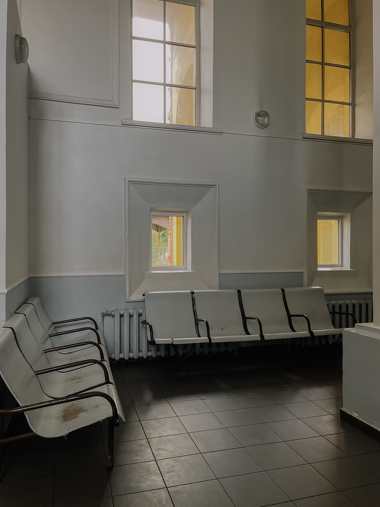

Observação
Só indicação
não é aquisição.
É espera.
Quem indica decide o tamanho do seu mês.


Observação
Quem indica decide o tamanho do seu mês.
Modelo ilustrativo
Três horários preenchidos. Uma única origem nos três.
Modelo ilustrativo · sem dados de paciente
Diagnóstico
Você não escolhe quantas chegam, quando chegam, nem de qual procedimento. Quando o volume cai, não existe alavanca para puxar.
O canal funciona. Ele só não obedece.
O mês que funcionou
O mês que não funcionou
Mesma explicação registrada: nenhuma
Sem origem anotada, o mês bom vira sorte e o mês ruim vira palpite.
Limite
Nada disso é defeito de quem indica. É limite do canal.

Método
Demanda que já existe na sua cidade.
Anúncio que alcança essa demanda.
Conversa respondida em tempo útil.
Agendamento e comparecimento.
Origem registrada em cada paciente.
Decisão
A indicação continua. Ela deixa de ser a única fonte e passa a ser uma fonte medida.
Uma coluna por semana muda a conversa sobre o mês.
Proposta de CTA · salve e compare com a sua agenda desta semana